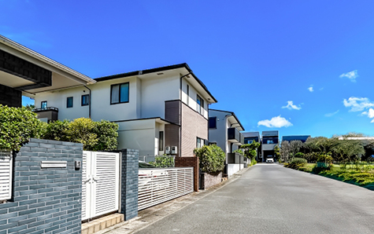

RELOCATION / 住み替え・自宅売却
住み替え・自宅売却をスムーズに
相模原市・厚木市で、今の住まいからの住み替えを検討されている方へ。
売却と購入のタイミング整理をご支援します。
- ホーム
- 住み替え・自宅の売却を考えている
住み替え・自宅の売却を考えている
相模原市・厚木市で住み替えや自宅の売却を検討している方へ、アイモットが資金計画と進め方をご案内します。住み替えでは、現在の自宅を先に売るか、新居を先に購入するかによって、必要な資金やスケジュールが変わります。
代表が自宅の査定から新居探しまでの流れを整理し、無理のない住み替えをサポートします。
今の住まいが暮らしに合わなくなっていませんか？
住み始めた頃は快適だった自宅も、家族構成や働き方、年齢の変化によって、暮らしに合わなくなることがあります。手狭になった、部屋を持て余している、通勤や階段が負担になったなど、不便を感じ始めたときは住み替えを考えるタイミングです。
今の家に住み続ける場合と、新しい住まいへ移る場合を比較しましょう。
このような方は住み替えをご検討ください
- 家族が増え、現在の自宅が手狭になった
- 子どもが独立し、使わない部屋が増えた
- 転勤や転職によって通勤先が変わった
- 在宅勤務に適した部屋が必要になった
- 庭や階段の管理が負担になってきた
- 築年数が進み、修繕費が気になっている
- 住宅ローンの返済負担を見直したい
- 駅や病院に近い場所へ移りたい
- 老後に向けて住まいと資産を整理したい
- 現在の自宅がいくらで売れるか知りたい
家族構成や働き方の変化が住み替えのきっかけに
住み替えを考える理由は、建物が古くなったことだけではありません。結婚、出産、子どもの独立、転勤、定年など、生活の変化によって必要な広さや立地は変わります。
現在感じている不便と、これからどのように暮らしたいかを整理すると、新居に必要な条件が見えやすくなります。
家族が増えて手狭になった
結婚や出産、子どもの成長によって、部屋数や収納が不足することがあります。在宅勤務用の部屋や、子どもの個室が必要になる場合もあります。現在の自宅を増改築する方法と、より広い住まいへ移る方法を比較し、費用や将来の暮らしに合う選択を考えましょう。
子どもの独立で家が広すぎる
子どもが独立すると、使用しない部屋や庭の管理が負担になることがあります。広い戸建てからコンパクトな住宅やマンションへ住み替えることで、掃除や修繕の負担を軽くできる可能性があります。現在の広さだけでなく、将来必要になる広さや生活動線を考えることが大切です。
転勤・転職で
生活拠点が変わった
勤務先が変わり、通勤時間が長くなった場合は、現在の自宅を売却して職場に近い地域へ移る方法があります。転勤期間が決まっている場合は保有や賃貸、戻る予定がない場合は売却など、状況に応じた判断が必要です。ご家族の通学や生活環境も含めて検討しましょう。
在宅勤務に合う
住環境へ移りたい
在宅勤務が増え、仕事へ集中できる部屋や通信環境を求める方もいます。現在の自宅をリフォームする方法もありますが、費用や間取りによっては住み替えた方が希望を実現しやすい場合があります。部屋数だけでなく、生活音や周辺環境も確認しましょう。
築年数と修繕費を
踏まえて売却時期を考えましょう

建物は築年数が進むにつれて、屋根、外壁、水回り、給湯器などの修繕が必要になる可能性があります。大規模な修繕をおこなって住み続けるか、費用が増える前に売却するかを比較しましょう。
築年数だけで売却価格は決まりませんが、建物の状態が良いうちに査定を受けることで、選択肢を確保しやすくなります。
修繕するか住み替えるかを比較する
今後も長く住む予定であれば、必要な修繕をおこなう価値があります。
一方、数年以内に住み替える可能性がある場合は、高額な修繕費をかけても売却価格で回収できないことがあります。修繕前の査定価格と、工事後に期待できる価格を確認してから判断しましょう。
築年数が古くても売却できる可能性があります
築年数が進んだ住宅でも、立地や土地の価値、管理状態によっては購入希望者が見つかる可能性があります。リフォームを希望する方や、建物を解体して建て替える方もいます。「古いから売れない」と判断せず、現在の状態のまま査定を受けましょう。
今の価値を確認して将来の計画を立てる
今すぐ住み替える予定がなくても、自宅の査定価格を確認できます。現在の価値、住宅ローン残高、将来必要になりそうな修繕費が分かれば、いつ動くべきか判断しやすくなります。数年後の住み替えへ向けた資金計画にも活用できます。
住み替えは現在の自宅の査定から始めます
住み替えでは、新居を探す前に現在の自宅がいくらで売れる可能性があるかを確認することが重要です。売却価格から住宅ローンや諸費用を差し引き、手元に残る金額を把握すると、新居へ使える予算が見えてきます。
購入できる金額ではなく、無理なく支払える金額を基準に計画しましょう。
※表は左右にスクロールして確認することができます。
| 確認する項目 | 主な内容 |
|---|---|
| 自宅の査定価格 | 現在売却した場合の価格目安 |
| 住宅ローン残高 | 売却時に返済する金額 |
| 売却にかかる費用 | 仲介手数料、登記費用など |
| 売却後の手取り額 | 新居へ使用できる資金 |
| 新居の購入費用 | 物件価格、購入諸費用 |
| 仮住まい・引越し費用 | 住み替え方法により必要 |
| 毎月の住宅費 | ローン、管理費、修繕費など |
売却価格ではなく手取り額を確認します
査定価格の全額を新居購入に使用できるわけではありません。住宅ローンの返済、仲介手数料、登記費用などを差し引く必要があります。
また、査定価格と実際の成約価格が異なる場合もあります。売却価格が下がった場合も想定し、余裕のある予算を立てましょう。
新居購入後の維持費も考えます
新居購入後は、住宅ローンだけでなく、固定資産税、管理費、修繕積立金、駐車場代などが必要です。現在より高額な物件を購入できても、毎月の支払いが生活を圧迫しては安心して暮らせません。教育費や老後資金なども含めて資金計画を立てましょう。
購入予算を先に広げすぎない
住みたい物件を先に見つけると、無理に購入予算を広げてしまうことがあります。まず現在の自宅の手取り額と、毎月支払える住宅費を確認しましょう。新居の詳しい物件探しや住宅ローンについては、「物件を買いたい方へ」ページでご案内しています。
売却先行・購入先行・同時進行を比較します
住み替えには、現在の自宅を先に売却する方法、新居を先に購入する方法、売却と購入を同時に進める方法があります。それぞれにメリットと注意点があり、すべての方に同じ方法が適しているわけではありません。資金状況、希望時期、仮住まいの可否などを確認して選びましょう。
※表は左右にスクロールして確認することができます。
| 進め方 | メリット | 注意点 |
|---|---|---|
| 売却先行 | 手取り額を確認してから新居を選べる | 仮住まいが必要になる場合がある |
| 購入先行 | 希望する新居を確保しやすい | 二重ローンや二重の維持費に注意 |
| 同時進行 | 仮住まいや二重負担を避けやすい | 売却・購入の日程調整が難しい |
売却先行で住み替える
売却先行は、現在の自宅を先に売り、売却代金と手取り額を確認してから新居を購入する方法です。新居の予算を明確にでき、資金不足のリスクを抑えやすくなります。現在の住宅ローン残高が多い方や、資金面の安全性を重視する方に向いています。
資金計画を立てやすい方法です
自宅の売却価格が確定するため、新居へ使える自己資金を把握できます。売却代金から住宅ローンや売却費用を差し引き、手元に残る金額を基準に新居を選べます。想定より安く売れたことで、購入資金が不足するリスクを抑えやすい方法です。
仮住まいが必要になることがあります
自宅の引き渡しまでに新居が決まらない場合は、賃貸住宅などへ一時的に移る必要があります。引越しが2回になり、家賃や初期費用が発生する可能性があります。
買主と引き渡し時期を調整できる場合もあるため、売却開始時に希望を伝えておきましょう。
購入先行で住み替える
購入先行は、希望する新居を購入してから現在の自宅を売却する方法です。新居を確保したうえで売却できるため、仮住まいを避けやすくなります。また、自宅を空き家にして販売できるため、内覧対応や室内の見せ方を整えやすい点も特徴です。
希望する新居を確保しやすい方法です
条件に合う物件が見つかった段階で購入へ進めるため、購入機会を逃しにくくなります。現在の自宅をいつ売れるかに左右されず、新居探しを優先できます。転勤や入学など、入居したい時期が決まっている方に適している場合があります。
二重の住宅費に注意が必要です
現在の住宅ローンが残る状態で新しいローンを利用すると、一時的に二重返済になる可能性があります。売却が長引けば、固定資産税や管理費なども二重にかかります。
売却までに時間がかかった場合も支払いを続けられるか、金融機関に確認しましょう。
売却と購入を
同時に進める
売却と購入を同時に進め、自宅の売却代金を受け取る日と、新居の代金を支払う日を合わせる方法があります。仮住まいや二重ローンを避けやすい一方、売主・買主・金融機関など、複数の関係者との調整が必要です。
日程や契約条件を一体で管理できる不動産会社へ相談することが重要です。
日程を合わせられるとは限りません
現在の自宅の買主と新居の売主には、それぞれ希望する引き渡し日があります。両方の条件が一致しない場合は、契約日や引越し日を調整しなければなりません。希望時期だけでなく、調整できる期間をあらかじめ確認しましょう。
売却・購入の
優先順位を決めます
希望する新居が見つからない場合や、自宅の売却が進まない場合に、どちらを優先するかを決めておくことが大切です。「いつまでに売れなければ価格を見直すか」「いつまでに新居を決めるか」など、期限を設定すると判断しやすくなります。
住宅ローンが残っていても
住み替えを相談できます
住宅ローンが残っている自宅も、売却代金などでローンを完済できれば住み替えを進められます。まず査定価格とローン残高、売却にかかる費用を比較しましょう。
完済が難しい場合は、自己資金や金融機関との調整が必要になるため、物件購入を進める前の確認が重要です。
売却代金で完済できる場合
売却価格が住宅ローン残高と売却費用を上回る場合は、売却代金でローンを完済し、残った資金を新居購入に充てられる可能性があります。
ただし、査定価格は実際の成約価格を保証するものではありません。想定価格に幅を持たせて計画しましょう。
売却代金だけでは完済できない場合
住宅ローン残高が売却価格を上回る場合は、不足分を自己資金で補う必要があります。新たな住宅ローンと合わせて調整できる場合もありますが、金融機関の審査が必要です。現在のローンと新居の予算を確認し、無理な借入れにならないよう注意しましょう。
返済に不安がある場合は早めに相談する
住宅ローンの返済が家計を圧迫している場合は、返済が遅れる前に相談することが重要です。滞納前であれば、一定の販売期間を確保しやすく、通常の仲介や買取などを比較できます。すでに返済が遅れている場合は、金融機関や専門家との調整が必要になる可能性があります。
今すぐ売却しなくても住み替え相談はできます
住み替えを考え始めた段階で、すぐに自宅を売却する必要はありません。現在の査定価格、住宅ローン残高、新居の相場を確認すれば、いつ頃動くべきか判断しやすくなります。
「子どもが独立したら」「定年を迎えたら」など、数年後を見据えたご相談も可能です。
将来の計画を立てるための査定
現在の自宅がいくらで売れる可能性があるかを知ることで、新居の購入予算や必要な貯蓄額を考えられます。査定を受けたからといって、必ず売却する必要はありません。ご家族との話し合いや、将来の資産計画にご活用ください。
リフォームをする前に確認する
売却前にリフォームをおこなえば高く売れるとは限りません。購入希望者が自分の好みに合わせて改修したい場合もあります。高額な修繕やリフォームを依頼する前に、現状のまま売却した場合の価格を確認しましょう。
相模原市・厚木市の住み替えをご相談ください
住み替えは、自宅を売ることと新しい住まいを探すことを別々に考えるのではなく、資金と日程を一体で整理することが大切です。相模原市・厚木市で住み替えを検討している方は、まず現在の自宅の価値と住宅ローン残高を確認し、無理なく進められる方法を考えましょう。
売却と新居探しをまとめて支援します
アイモットでは、代表が直接お話を伺い、住み替えの目的、自宅の査定価格、住宅ローン、新居の希望を丁寧に整理します。売却先行・購入先行・同時進行を比較し、査定、販売活動、新居探し、契約、引越しまで一貫してサポートします。住み替えを決めていない段階でもご相談ください。